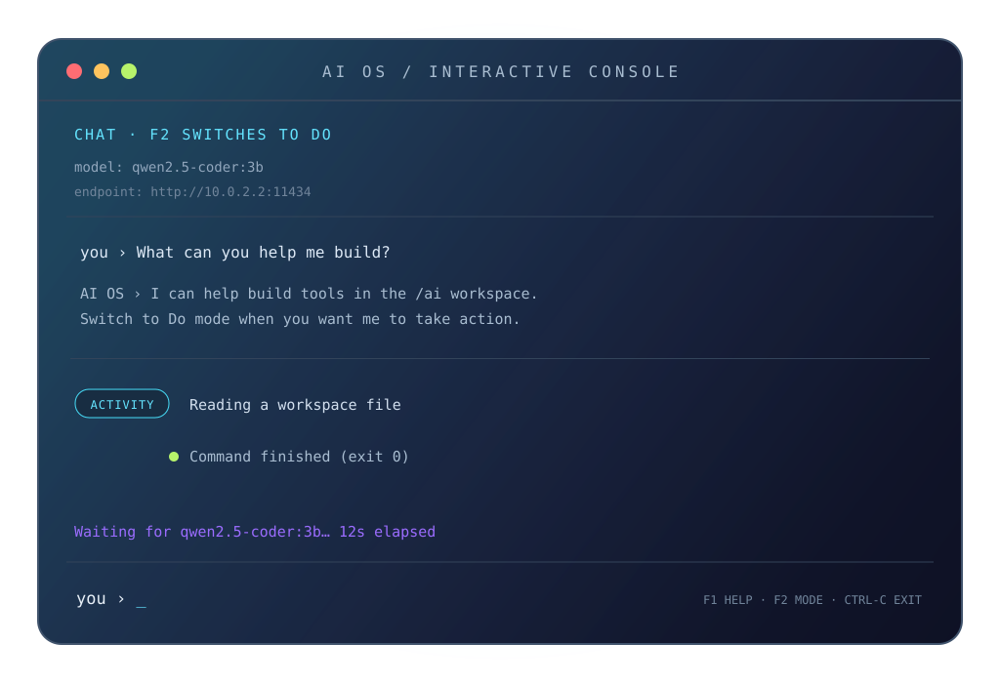

Emulator first
Alpine aarch64 on QEMU/HVF. One lifecycle interface. Snapshots at every meaningful milestone.
Platform contract ↗YOUR FIRST SESSION, ONE COMMAND AWAY
A local-first AI operating system you can actually talk to. Ask a question, switch to Do, and watch it work inside a bounded emulator.

START HERE / 01 MINUTE
AI OS runs in an isolated Alpine VM. Your model stays on your Mac.
On Apple Silicon Mac, install QEMU and Ollama, then choose a local model.
brew install qemu ollama
ollama pull qwen2.5-coder:3bIn Terminal, from the AI OS checkout:
./emulation/start.shAsk in Chat. Press F2 for Do mode. Follow visible progress and review the result.
Read the first-run guide ↗First launch verifies and downloads the guest OS image. Model weights are never downloaded automatically. Requires macOS, Apple Silicon, QEMU, Ollama, and a local model.
01 / THE SYSTEM
Most agent demos stop at a chat window. AI OS asks what happens after the answer: can an agent build a useful environment while the environment keeps the agent bounded?
The emulator is the lab bench. Every capability is observable, checkpointable, and evaluated before it earns a place in the system.
Read the architecture ↗goalreason/aipass02 / THE EVIDENCE
Alpine aarch64 on QEMU/HVF. One lifecycle interface. Snapshots at every meaningful milestone.
Platform contract ↗Workspace policy, secret denial, network gates, time limits, output caps, and explicit human approval.
Security model ↗The console shows when AI OS is waiting on the model, which kind of tool it is using, and how each task ended.
Console guide ↗03 / THE ROAD AHEAD
Guided first run, local-model chat, bounded Do mode, visible progress, tests and audit trails.
Clear task plans, app discovery, approvals, recovery, and verified installation in one place.
Only after the emulator proves the capabilities, explore a graphical shell and real hardware.
OPEN SOURCE, CAREFULLY
Good contributions make AI OS easier to understand and harder to accidentally widen.